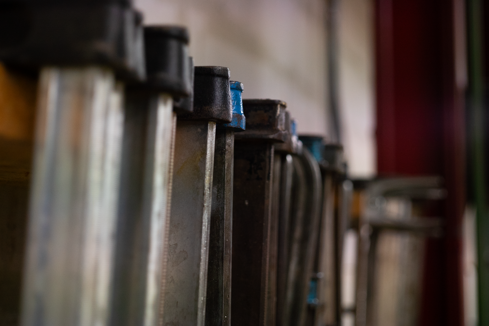
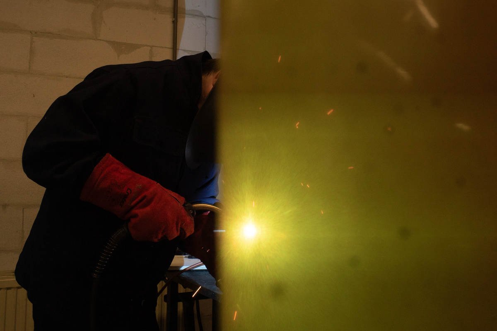
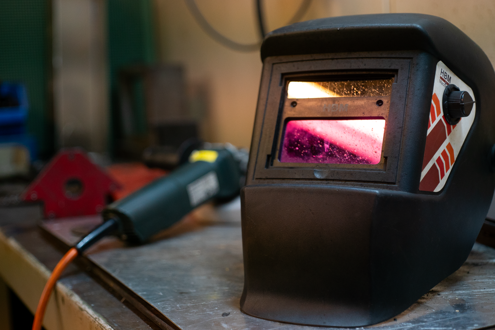

Heb je een idee dat je wilt laten uitvoeren, zoek je maatwerk in metaal of heb je iets dat gerepareerd kan worden? In de techniekwerkplaats van Kr8tig in Weert denken we graag met je mee. Van terraskachels en tafelonderstellen tot reparaties, constructies en unieke decoratieve objecten: veel begint bij een vraag, schets of idee.
In onze werkplaats wordt dagelijks gemeten, gelast, geslepen, gemonteerd en gebouwd. We werken aan eigen producten, maar ook aan opdrachten van particulieren, bedrijven en organisaties.
Heb je een specifieke wens? Samen bekijken we wat technisch mogelijk is en hoe we jouw idee kunnen vertalen naar een passend eindproduct. Juist maatwerk biedt ruimte voor creatieve oplossingen en maakt dat geen opdracht hetzelfde hoeft te zijn.
Je kunt bij ons onder andere terecht voor:
Niet alles wat beschadigd of afgedankt is, hoeft vervangen te worden. Waar mogelijk kijken we of een product gerepareerd kan worden, onderdelen opnieuw gebruikt kunnen worden of bestaand materiaal een compleet nieuwe bestemming kan krijgen.
Zo komen techniek, creativiteit en circulariteit samen. Van een praktische reparatie tot een uniek object gemaakt van hergebruikte materialen: we kijken graag naar wat er nog wél mogelijk is.
Deelnemers werken samen met onze vakmensen en begeleiders aan de opdrachten die in de werkplaats binnenkomen. Voor jou als klant betekent dit een product of oplossing die met aandacht wordt gemaakt. Voor onze deelnemers zijn deze echte opdrachten een waardevolle kans om praktijkervaring op te doen.
Ze leren veilig werken met verschillende gereedschappen en materialen, ontwikkelen technische vaardigheden en oefenen tegelijkertijd met plannen, samenwerken, doorzetten en verantwoordelijkheid nemen. Wat zij maken wordt daadwerkelijk gebruikt door een klant. Dat maakt het resultaat tastbaar en geeft betekenis aan het werk dat zij doen.
Met jouw opdracht laat je dus niet alleen iets maken of herstellen, maar bied je deelnemers ook de kans om hun talenten te ontdekken en verder te ontwikkelen.
Benieuwd wat we voor je kunnen maken, repareren of bedenken? Neem je idee, vraag of voorbeeld gerust mee. We kijken graag samen naar de mogelijkheden.
Je vindt de techniekwerkplaats van Kr8tig aan de Parallelweg 169 in Weert. Voor vragen of informatie kun je contact opnemen via info@kr8tig.nl.
Openingstijden: maandag t/m vrijdag van 09.00 tot 16.00 uur.